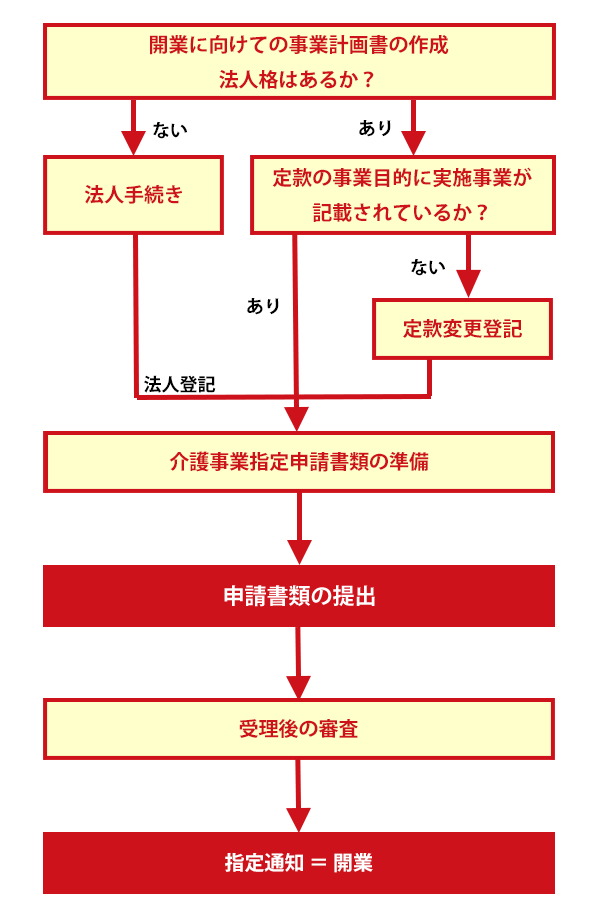

介護事業の会社設立
PROTECTION介護事業
（１）介護事業業の開業を検討されている方へ
介護事業で開業される方は、以下のような声を頂きます。
- 介護事業をはじめるにあたり、介護事業の指定要件がわからない・・・
- まずは開業をできるか専門家に診断してもらいたい・・・
- 開業準備に専念したいのに、書類の作成で時間がかかってしまっている・・・
当事務所では、会社設立を専門とする部隊がいるため、そのようなお客様のニーズにも、１つ１つ個別のご提案をさせて頂きます。
（２）介護事業で開業するときのポイント
●介護事業指定申請
介護事業者となるためには、都道府県の指定を受けることが必要になります。
原則として、営利・非営利を問わず法人格を有していれば指定の対象となります。
しかし、訪問看護・訪問リハビリテーション・通所リハビリテーション・短期入所療養介護・居宅療養管理指導などの医療系サービスは、指定対象を病院、診療所などに限定しているため、たとえ法人格を有していてもこれら以外は指定の対象となることはできません。
但し、改正により創設された地域密着型サービス及び介護予防地域密着サービスは市町村の指定を受けることになります。
指定申請のフロー
●介護事業指定申請の流れ
（３）当事務所が介護事業に強い理由
●介護事業者を多くサポートしている実績
介護事業者にとっての収益は、国民健康保険団体連合会（国保連）に請求する介護報酬、およびサービス利用者から徴収する利用料、介護保険外サービス収益などにより構成されます。
特に介護報酬や支援費収入の処理は介護（支援費）事業者独特の管理を要し、他の会計と区分すると共に、複数の介護事業を営む場合には事業区分別の損益管理をしなければなりません。
また介護事業は基本的に消費税は非課税ですが、介護保険の適用範囲と消費税の非課税範囲は微妙に異なるので注意が必要です。
弊社では、介護事業に精通した税理士と提携することにより、一般法人、NPO法人、社会福祉法人等の事業体に応じた会計システムを提供し適切かつ効率的に介護事業者のための会計管理をサポートします。
⇒相談のながれ●税務のスペシャリスト
どの業界でも言えることですが、どんな税理士の先生を選ぶべきかと悩まれる経営者様も多いようです。
当事務所は、会社設立の専門家だけではなく、税務の専門家も多く在籍しております。
そのため、設立した後のフォロー体制も安心してお任せ頂けるかと思います。
税務調査ネット（４）介護事業限定サポートプラン
| 料金プラン | 備考 | |
|---|---|---|
| 訪問介護・居宅介護・福祉用具貸与指定申請 | ||
| 訪問介護・居宅介護・福祉用具貸与指定申請 | 126,000- | 顧問の場合は、84,000円 |
| デイサービス（通所介護）指定申請代行 | ||
| デイサービス（通所介護）指定申請代行 | 210,000- | 顧問の場合は、157,500円 |
| 介護タクシー | ||
| 介護タクシー 許可申請代行 | 262,500- | 顧問の場合は、178,500円 |